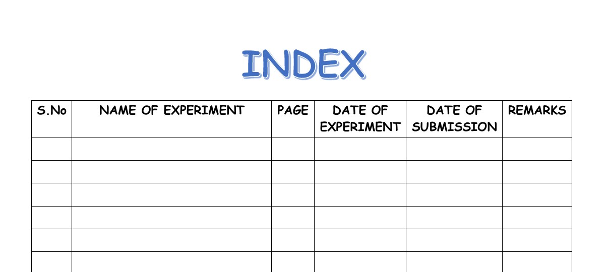
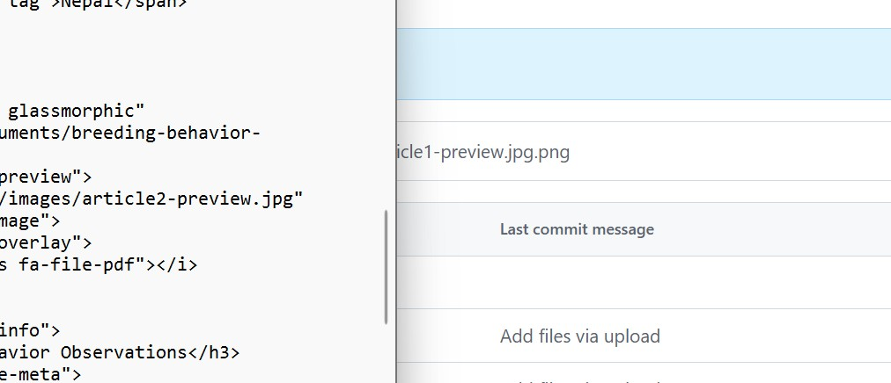

Research Articles

Habitat Preferences of Spiny Babbler
A comprehensive study on the habitat selection and preferences of the Spiny Babbler in different ecological zones of Nepal.

Breeding Behavior Observations
Detailed observations of breeding behaviors, nesting patterns, and parental care in Spiny Babbler populations.

Conservation Status Assessment
Current conservation status, threats assessment, and recommendations for Spiny Babbler protection in Nepal.